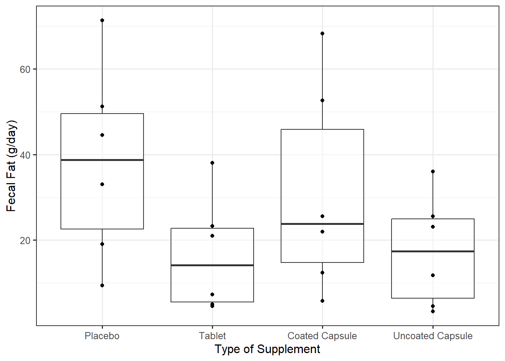
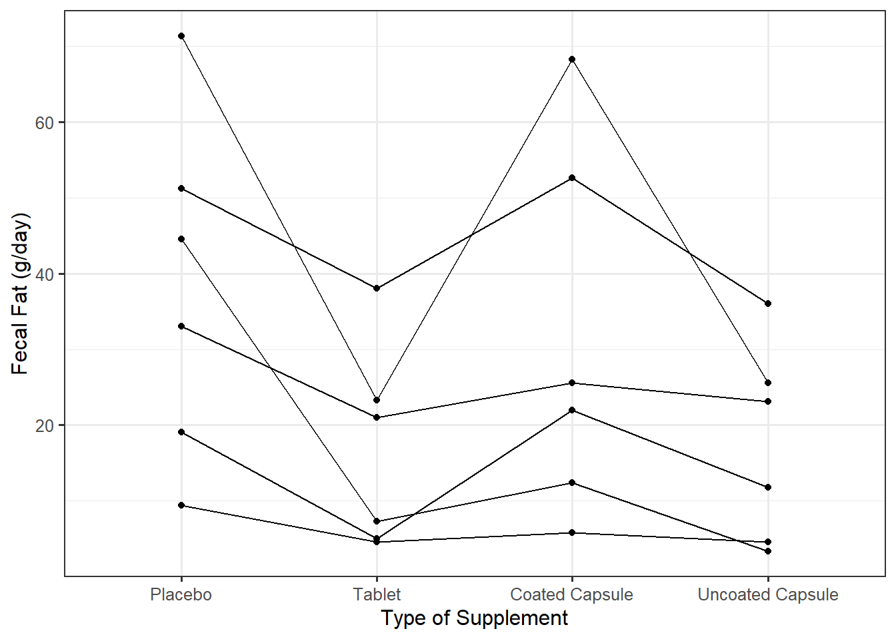

| Placebo | 44.5 | 33.0 | 19.1 | 9.4 | 71.3 | 51.2 |
| Tablet | 7.3 | 21.0 | 5.0 | 4.6 | 23.3 | 38.0 |
| Coated Capsule | 12.4 | 25.6 | 22.0 | 5.8 | 68.2 | 52.6 |
| Uncoated Capsule | 3.4 | 23.1 | 11.8 | 4.6 | 25.6 | 36.0 |
13 The Language of Repeated Measures
13.1 Importance of Study Design
Study design is too often separated from the statistical analysis that follows. However, in addition to informing the conclusions we draw regarding the data, the study design helps in choosing an appropriate analysis to address the question of interest. As an example, consider the following study reported in Vittinghoff et al. (2012).
Example 13.1 (Digestive Enzymes) The ability of the bowels to properly absorb nutrients can be impacted by a lack of digestive enzymes. This presents as excess fat in the feces, which is in turn treated with pancreatic enzyme supplements. A study was conducted comparing three forms of a particular enzyme supplement; these were compared to no supplement (placebo) as a control. Participants were given the supplement to take for a specified length of time; then, the amount of fecal fat (g/day) present was recorded. Interest is in determining if the amount of fecal fat produced, on average, differs for any of the treatments.
Suppose we are given the data in Table 13.1 to address the question posed in Example 13.1.
Consider the following generalized linear model to describe the data generating process:
\[(\text{Fat})_i = \beta_0 + \beta_1 (\text{Tablet})_i + \beta_2 (\text{Coated})_i + \beta_3 (\text{Uncoated})_i + \varepsilon_i, \tag{13.1}\]
where
\[ \begin{aligned} (\text{Tablet})_i &= \begin{cases} 1 & \text{if i-th observation corresponds to supplement in tablet form} \\ 0 & \text{otherwise} \end{cases} \\ (\text{Coated})_i &= \begin{cases} 1 & \text{if i-th observation corresponds to supplement in coated form} \\ 0 & \text{otherwise} \end{cases} \\ (\text{Uncoated})_i &= \begin{cases} 1 & \text{if i-th observation corresponds to supplement in uncoated form} \\ 0 & \text{otherwise} \end{cases} \\ \end{aligned} \]
are indicator variables capturing the impact of the categorical treatment group. Our question of interest is captured by the testing
\[H_0: \beta_1 = \beta_2 = \beta_3 = 0 \qquad \text{vs.} \qquad H_1: \text{At least one } \beta_j \text{ differs}.\]
This analysis demonstrates no evidence (p = 0.168) the average amount of fecal fat differs for any of the supplement forms (see Figure 13.1).

Of course, the above analysis is predicated on the data being consistent with the conditions for the classical regression model. For example, it seems reasonable to assume that the fecal fat present in one subject is independent of the fecal fat present in any other subject once we have accounted for the type of supplement. Therefore, it seems reasonable that any two fecal fat measurements above are independent once we have accounted for the type of supplement received. This, however, follows from how we assumed the data was collected — that each measurement is from a different subject.
Let’s reconsider the above example but add a little more context to the study design.
Example 13.2 (Example 13.1 Continued (Expanded Context)) The study described in Example 13.1 was actually conducted as a cross-over study enrolling six participants. Each participant was given one form of the enzyme (determined randomly) and followed for a specified period of time at which point the amount of fecal fat (g/day) present was obtained. Following a substantial wash-out period the participant was assigned a different form of the supplement. This continued until each participant had been assigned to all four supplement forms.
Interest is in determining if the amount of fecal fat produced, on average, differed for any of the treatments. However, it is known that the amount of fecal fat present can vary substantially from one individual to another due to dietary preferences; researchers would like to account for the variation in the fecal fat across subjects when performing the analysis.
Table 13.2 provides the same data as Table 13.1 but with the additional context given in Example 13.2 — specifically, that six participants underwent each of the four treatments.
| Subject 1 | Subject 2 | Subject 3 | Subject 4 | Subject 5 | Subject 6 | |
|---|---|---|---|---|---|---|
| Placebo | 44.5 | 33.0 | 19.1 | 9.4 | 71.3 | 51.2 |
| Tablet | 7.3 | 21.0 | 5.0 | 4.6 | 23.3 | 38.0 |
| Coated Capsule | 12.4 | 25.6 | 22.0 | 5.8 | 68.2 | 52.6 |
| Uncoated Capsule | 3.4 | 23.1 | 11.8 | 4.6 | 25.6 | 36.0 |
The study design results in several measurements being taken on each subject; further, the researchers believe that amount of fecal fat present can vary substantially from one individual to another. This additional information suggests that observations from the same individual are associated in some way; it is therefore unreasonable to assume the errors in Equation 13.1 are independent of one another.
Note
For those familiar, you may recognize the cross-over design described in Example 13.2 as a “randomized complete block design.” Others may be familiar with the concept of “paired data,” of which Example 13.2 is a generalization. While the idea is similar, the methods discussed in this text are a more inclusive approach.
Why would recording multiple observations on the same subject impact the condition of independence? A cursory look at the data confirms the researchers’ beliefs: the values of fecal fat vary greatly from one participant to another, ranging from 9 to 71 g/day in some cases. However, the values of fecal fat recorded for a single participant do not tend to vary to such a degree. That is, the variability between participants is substantially larger than the variability within a participant. As suggested by the researchers, this could be explained by differences in participant diets. It is difficult to detect differences between the supplement types since the differences between subjects is so much larger.
To better understand why researchers would design such a study, we review attributes of good study design. Generally speaking, there are three components to any well-designed study: replication, randomization, and reduction of extraneous noise.
Warning
A study is not poor just because it lacks one of these elements. That is, a study can provide meaningful insights even if it does not make use of each of these elements; every study is unique and should be designed to address the research objective. These elements are simply helpful in creating study designs.
Definition 13.1 (Replication) Replication results from taking measurements on different units (or subjects) for which you expect the results to be similar. That is, any variability across the units is due to natural variability within the population.
Warning
The term “replication” is also used in the context of discussing whether the results of a study are replicable. While our use of the term is about replicating a measurement process within a study, this does not downplay the importance of replicating an entire study.
Replication allows us to estimate subject-to-subject variability. Our intuition is that more data is better; in fact, increasing the sample size (the number of unique subjects on which we collect data) will result in less variability in our estimates. That is, the sampling distribution for the parameter estimates will be narrower. Increased replication also leads to increased power — the ability to detect a signal when it really exists (as the null distribution will also be narrowed).
Definition 13.2 (Randomization) Randomization can refer to random selection or random allocation.
Random selection refers to the use of a random mechanism to select units from the population. Random selection minimizes bias.
Random allocation refers to the use of a random mechanism when assigning units to a specific treatment group in a controlled experiment. Random allocation eliminates confounding and permits causal interpretations.
There are many forms of random sampling. Some sampling schemes ensure each collection of subjects is equally likely (e.g., simple random sample), while others over-sample from underrepresented subpopulations (e.g., stratified random sample). Each scheme shares the goal of eliminating bias, making the data more representative of the target population. While random sampling is the ideal, it is not always feasible. In clinical trials, for example, patients must elect to participate, thereby making the sample not random. When a random sample is not possible, summarizing the data to ensure it is representative of the target population is critical.
There are many forms of random allocation. Some randomization schemes ensure each treatment group is equally likely, while others assign participants to the active treatment with a higher probability than to the placebo. Other randomization schemes, like that mentioned in Example 13.2 randomizes the order of treatments. Each scheme shares the goal of eliminating confounding, allowing for causal interpretations. Whenever possible, random allocation is utilized, but it is not always feasible. Perhaps most famously, it would be unethical to conduct a randomized controlled trial to investigate the link between smoking and cancer. Therefore, observational studies were utilized to establish this link.
Definition 13.3 (Reduction of Noise) Reducing extraneous sources of variability can be accomplished by fixing extraneous variables or through blocking. These actions reduce the number of differences between the units under study.
Tension between Lab Settings and Reality
Scientists and engineers are trained to control unwanted sources of variability (or sources of error in the data generating process). This creates a tension between what is observed in the study (under “lab” settings) and what is observed in practice (under “real-world” settings). This tension always exists, and the proper balance depends on the goals of the researchers.
Intuitively, the less variation in the response, the easier it is to detect a signal. This leads naturally to saying that we could eliminate extraneous variability if the groups were identical; that results in using the same subjects in multiple groups, resulting in taking repeated measurements on the subjects — blocking on the participant.
Definition 13.4 (Blocking) Blocking is a way of minimizing the variability contributed by an inherent characteristic that results in dependent observations. In some cases, the blocks are the unit of observation which is sampled from a larger population, and multiple observations are taken on each unit. In other cases, the blocks are formed by grouping the units of observations according to an inherent characteristic; in these cases that shared characteristic can be thought of having a value that was sampled from a larger population.
In both cases, the observed blocks can be thought of as a random sample; within each block, we have multiple observations, and the observations from the same block are more similar than observations from different blocks.
Blocking is useful when we can identify the nuisance characteristic in advance of data collection. Blocking is a way of ensuring the treatment groups are similar because the same subjects (with respect to this particular characteristic) end up in each treatment group. We know that random allocation eliminates confounding because it ensures that, on average, treatment groups are similar. Blocking alone does not eliminate confounding; it must be combined with randomization. However, if we account for the blocking in the analysis, we are able to sharpen our estimates because not only has balance occurred, we are able to explain a portion of the variability within each treatment group.
13.2 Studies with Repeated Measures
Studies that have repeated measurements taken on subjects typically violate the condition of independence. While the above design concepts apply broadly, the following terminology is specific to such studies.
Definition 13.5 (Repeated Measures) The phrase “repeated measures” refers to data for which the observed responses can be grouped based on some nuisance variable (typically the participant), and this grouping captures some inherent characteristic such that observations within a group tend to be more alike than observations across groups.
Note
The “paired data” setting (typically studied alongside the “paired t-test”) is a special case of using blocking with two observations per block, resulting in repeated measures.
As discussed in Example 13.2, the large variability in fecal fat across participants relative to the variability in fecal fat within participants can mask the treatment effect if not accounted for appropriately. From a more theoretical perspective, this difference in the variability induces a correlation structure among the error in the responses.
Definition 13.6 (Correlation Structure) The correlation structure quantifies the strength and direction of the relationship between the errors in the observed responses.
Big Idea
Ignoring the correlation structure does not tend to affect the parameter estimates, but it often affects the resulting standard errors, thereby impacting confidence intervals and p-values.
Unfortunately, there is no way to predict the impact of ignoring the correlation structure on the standard errors of our estimates. As a result, ignoring the correlation structure could result in confidence intervals that are too wide or too narrow (and p-values that are too large or too small). In short, ignoring the correlation structure in the data can result in inappropriate inference. In order to obtain appropriate inference, we need to account for the structure in our model!
Big Idea
When the data is correlated, it must be taken into account in all aspects of the analysis, from graphics to inference.
In order to illustrate the impact of the correlation structure on an analysis, let us revisit visualizing the data from the digestive enzymes study. Recall that Figure 13.1 visualized the data from Example 13.1 when we assumed the data came from 24 independent participants; Figure 13.2 visualizes the same data with the context from Example 13.2 included — namely that there were only six participants, each measured under multiple treatments. While there are some exceptions, notice how the lines do not “mix” often; that is, some participants tend to have less fecal fat than others, regardless of the form of the supplement given. The differences between Figure 13.1 and Figure 13.2 highlights that the differences in the overall average response for each supplement type is small relative to the variability across participants; as a result, focusing on the overall average response alone (Figure 13.1) make it difficult to detect differences between the supplement types. However, if we examine the differences in the supplement types within each participant (Figure 13.2), we can see that for nearly every participant, the fecal fat is reduced with the supplement (compared to placebo). It may not be immediately obvious if there is a difference among the form of the supplement, but it seems clear that having the supplement is better than not having it. Accounting for the variability in the response across participants changes our conclusions.

Notice that when examining Figure 13.2, we were not interested in comparing one participant to another; our focus was still on comparing supplement types. The additional grouping was simply to account for the relationship between the observations. Not all “grouping” variables are the same. We think about variables differently depending on their role in the model for the data generating process. Loosely, we can categorize factors as either fixed or random effects.
Definition 13.7 (Fixed Effect) Fixed effects are terms in the model for which we are interested in both the specific grouping levels, and we are interested in characterizing the relationship between these levels and the response.
The treatment/factor of interest is nearly always a fixed effect. In addition, fixed effects can include anything we want to account for in the model in such a way that if we were to repeat the study, the same levels would be visible again. In Example 13.2, the form of the supplement is the fixed effect. If we were to repeat the study, we would still expect to use these same four levels (placebo, tablet, coated and uncoated capsule). And, we are interested in examining the impact of supplement type on the resulting fecal fat.
Definition 13.8 (Random Effect) Random effects are terms in the model that capture the correlation induced due to an inherent characteristic that varies across the population. We are not interested in the specific grouping levels, and we either are not interested in the relationship with the response.
We are rarely interested in saying how random effects impact the response; so, the treatment/factor of interest is rarely a random effect. In Example 13.2, the participant is a random effect. If we were to repeat the study, it is unlikely we would use these same six individuals. Instead of quantifying the difference between participants, we wanted to think about this variable because groups of observations on the same participant are more alike than observations across participants.
Note
In order to distinguish fixed and random effects in a model, think about repeating the study; would you care if the levels of the factor were to change? Are you interested in comparing the first level to the second? If you answer “yes” to these questions, the factor is most likely a fixed effect.
The impacts of fixed and random effects in modeling are studied in Chapter 14. In brief, regression modeling is about partitioning variability. When we are able to identify additional sources of variability (like how the response varies across individuals in the population), we are able to improve our estimation of the effects of interest.
In Example 13.2, each observation is from a unique combination of the participant on which it was observed and the treatment assigned at that time (a cross-over study). This is not the only form of a study that can result in repeated measurements. Other common study designs include longitudinal studies, cross sectional studies with subsampling, and studies that utilize cluster samples.
Definition 13.9 (Cross-Over Study) A cross-over study exposes each participant to multiple treatments. Whenever possible, the order of the treatments is randomly determined. This is equivalent to a randomized complete block design in which the blocks are the participants. When the treatments are believed to have a lingering effect, a wash-out period between treatments is used to minimize the impact of previous treatments on the treatment the participant is currently being exposed to.
Definition 13.10 (Randomized Complete Block Design) A randomized complete block design is an example of a controlled experiment utilizing blocking. Each treatment is randomized to observations within blocks in such a way that every treatment is present within the block and the same number of observations are assigned to each treatment within each block.
Definition 13.11 (Longitudinal Study) A longitudinal study repeatedly measures the response on each subject at various points in time.
All clinical trials follow subjects over time; a longitudinal study measures the response of interest multiple times over the course of the trial, resulting in repeated measures. In a longitudinal study, interest is often in modeling the overall trajectory across subjects instead of the trajectory for subjects individually. We are generally interested in modeling the trajectory of the response over the time interval. For example, we may be interested in the size of a tumor each month for the first year after being treated with radiation.
Note
There are many similarities between longitudinal studies and time-series data as each follows data over time. We do see some differences. Time-series data is often focused on business applications while longitudinal studies are more common in the biological sciences. Time-series data often models a single “stream” that is quite long. Longitudinal studies have several “streams” (one for each subject), but these tend to be a bit shorter as we do not have constant follow-up. In time-series data, it is often believed that the previous response is useful in predicting the next response; in longitudinal data, we do believe there is correlation among the errors in the model, but we do not generally use the value of the previous observation itself in making the next prediction but instead model with time as the predictor.
Definition 13.12 (Cross Sectional Study) A cross sectional study considers data from a single snapshot in time.
Cross sectional studies are generally what we imagine when we first learn about data collection in an introductory course. We note that individual observations in a cross sectional study may not have been taken at exactly the same time, but it is believed that time does not have an impact. For example, we might record the size of a tumor one month after treatment with radiation. While the study might enroll participants over the course of two years, we record the measurement at one snapshot in time (one month after treatment) on each participant, and we believe the participants from each year of the study should be representative of the same group.
Longitudinal studies clearly involve repeated measures. Whether a cross sectional study has repeated measures depends on the study design. In the biological sciences, it is common to employ subsampling in cross sectional studies.
Definition 13.13 (Subsampling) Subsampling occurs when several measurements are taken on each subject under the same treatment, possibly at unique locations.
In a study with subsampling, the unit of observation is the subject itself. As an example, a person may be assigned to a particular treatment to improve eyesight. The subject’s eyesight is then measured in each eye; the person is the unit of measurement but we obtain two measurements of the response (eyesight), one corresponding to each eye. This is sometimes referred to as “pseudo-replication,” and many researchers can mistakenly believe they have a larger sample size than exists in reality; the observations recorded on the same subject are related and should not be treated as independent observations. While it is common to average the subsamples, doing so results in a loss of information compared to modeling the correlation structure on the original data.
Definition 13.14 (Cluster Samples) Stratified sampling divides a population into groups and samples from within each group; in contrast, cluster sampling divides the population into groups and randomly samples a few groups and takes measurements from within the group.
Observations from the same cluster are typically related. For example, if we are studying the nutrition levels of citizens within a particular state, we may sample specific counties first, and then sample participants from within the chosen counties. Citizens from the same county may be related since they have similar access to healthy food options.
Regardless of the study design, when we recognize clusters of observations which have some relationship beyond that explained by the fixed effects of interest, we need to model that correlation structure.
Note
When we use the phrase “repeated measures,” we mean repeatedly measuring the same response. All regression models make use of multiple variables measured on the same subject. The models discussed in this unit refer to measuring the same response repeatedly.
When representing data from a repeated-measures study, it is useful to convey the correlation structure in the graphic as well (as we did in Figure 13.2). This is not always straight-forward. When the number of subjects in the study is not overwhelming, a spaghetti plot can be useful. These are particularly useful for studies that follow subjects over time and can be helpful in illustrating the trend over time.
Definition 13.15 (Spaghetti Plot) A spaghetti plot is a scatterplot that displays the trends within a subject, highlighting the correlation structure by connecting points from the same subject.
Other times, using color or other aesthetics is needed to illustrate the correlation in the data.